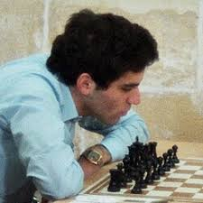
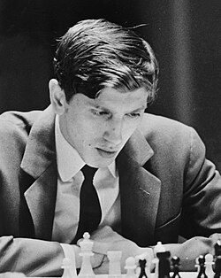
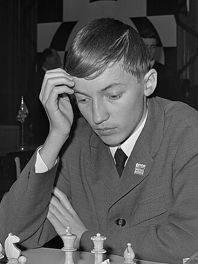
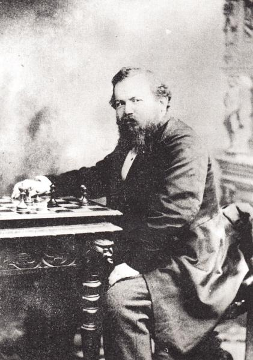
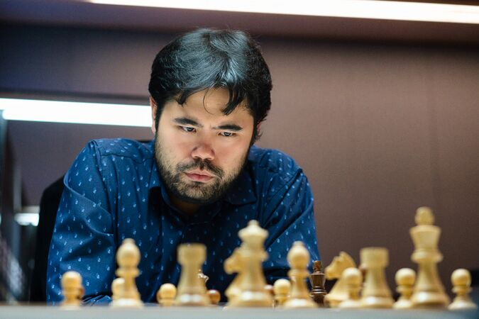

Top
Top
Garry Kasparov

A Soviet Grandmaster and a former world champion. He was one of the first world chess champions to be defeated by a computer (Deep Blue, 1979)
Learn MoreBobby Fischer

An American chess prodigy, he is known for his hisroric win vs Boris Spassky of the Soviet Union in 1972.
Learn MoreAnatoly Karpov

He is the 12th world Chess Champion, he is know for his positional mastery as well as his fierce rivalry.
Learn MoreWilhelm Steinitz

He is was the worlds first official World Chess Champion from 1886 to 1894.
Learn MoreHikaru Nakamura

He is a five time U.S. Champion as well as being the 2022 World Fischer Random Champion.
Learn MoreMikhail Botvinnik

He is the sixth World Chess Champion who transformed chess into a prepared state-sponsered science.
Learn More